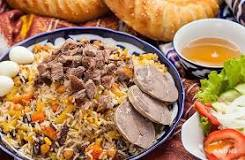
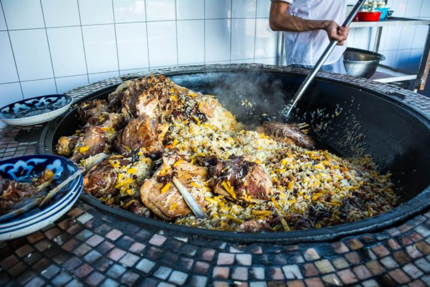

<!DOCTYPE html>
<html lang="en">
<head>
   <meta charset="UTF-8">
   <meta http-equiv="X-UA-Compatible" content="IE=edge">
   <meta name="viewport" content="width=device-width, initial-scale=1.0">
   <title>Document</title>
</head>
<body>
   
</body>
</html>
      
<body>

<ol>
   
как готовить плов?
<li>мясо</li>
<li>лук</li>
<li>рис</li>
<li>ачучу😂</li>
<li>морковь</li>
<li>чеснок</li>
<hr>
<li>потом перемешиваем все это</li>
<li>и в конце должен получиться плов</li>
<li>вкусный и аппетитный</li>
<hr>

<hr>
но если вы хотите посмотреть видео, то я оставил ссылку по которой вы можете перейти и посмотреть
<a href="https://www.youtube.com/watch?v=J-D3eZgos3I">КАК ГОТОВИТЬ ПЛОВ В ДОМАШНИХ УСЛОВИЯХ?</a>
<hr>
<li>а вот еще подробности про плов</li>
<li>Сколько стоит 1 порция плова в Ташкенте?
 <li>
   В Ташкенте стоимость одной порции плова составляет 16 600 сумов, за килограмм плова придётся отдать 116 200 сумов</li>
<li>Где готовят самый лучший и вкусный плов?</li>
  <li>
   Самый лучший плов готовят в Узбекистане. Сегодня расскажем про заведение под названием "Центр плова", которое нахваливают все местные жители и утверждают, что здесь готовят самый вкусный плов. Хусан-ака - мастер приготовления плова по-узбекски или ошпаз - это повар, специализирующийся на приготовлении плова.</li>


<ol>

</body>"